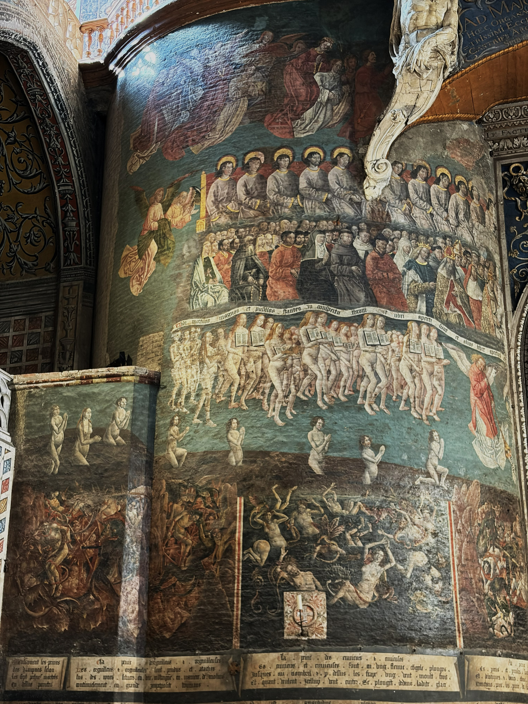
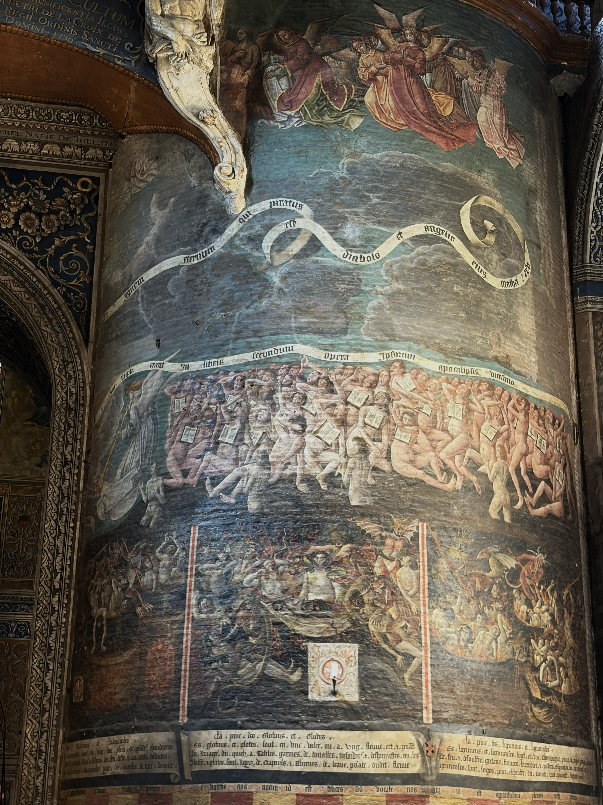
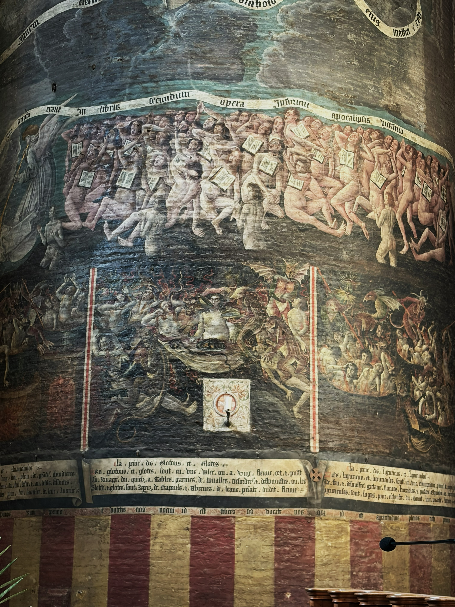
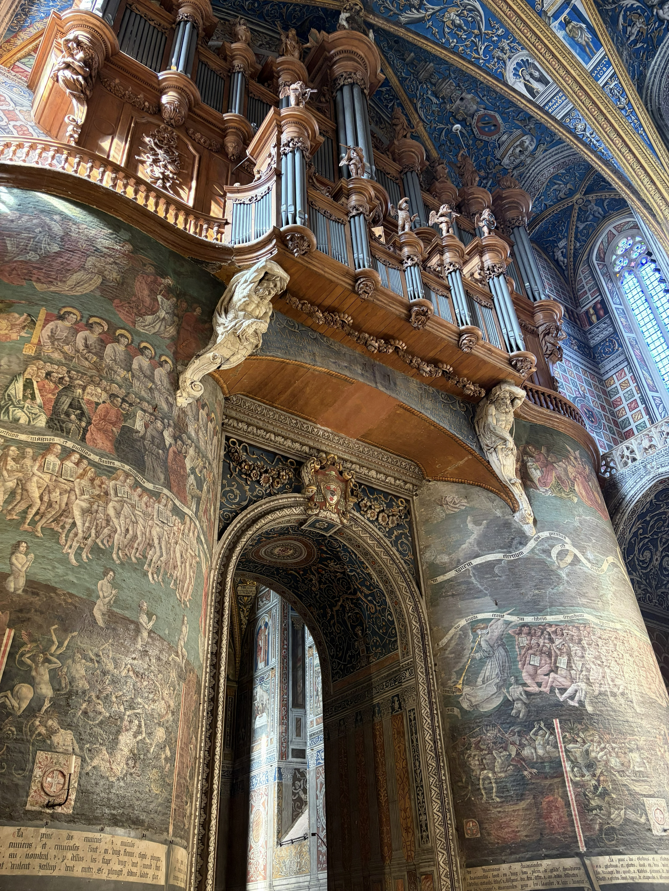
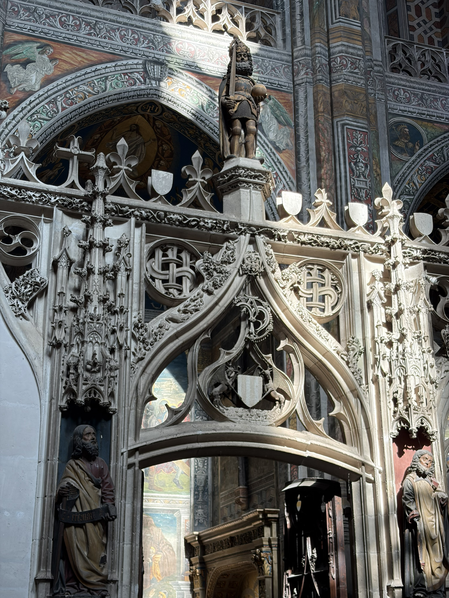
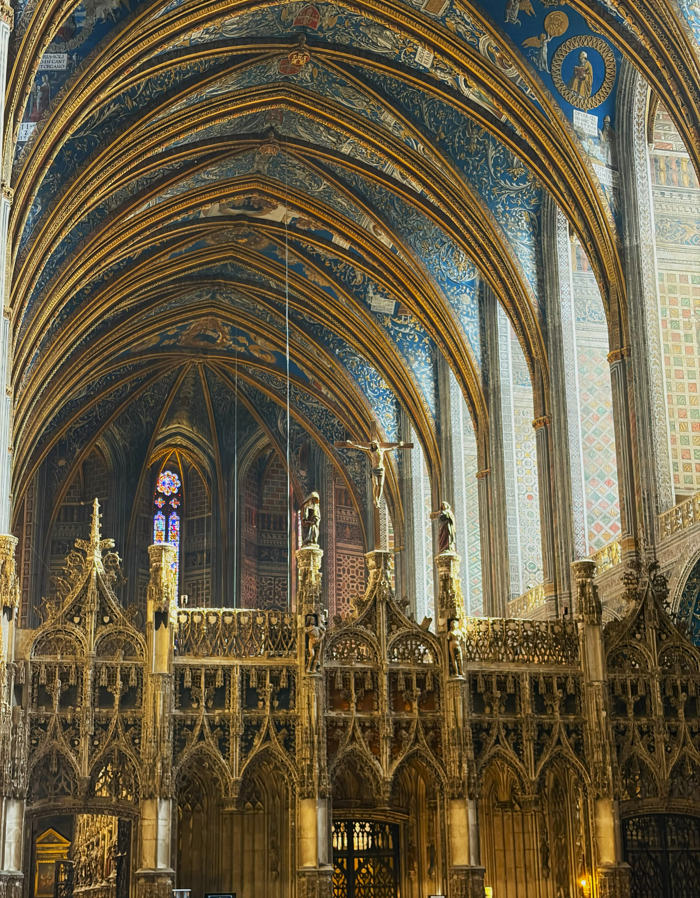
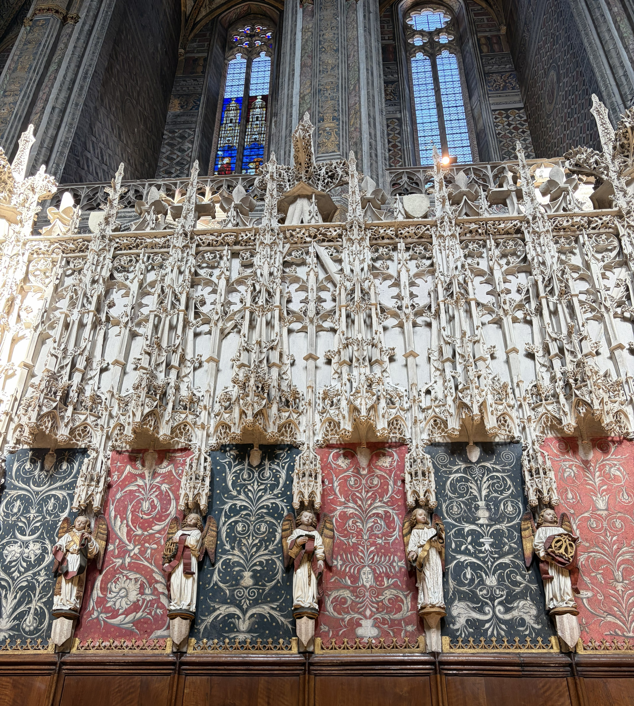
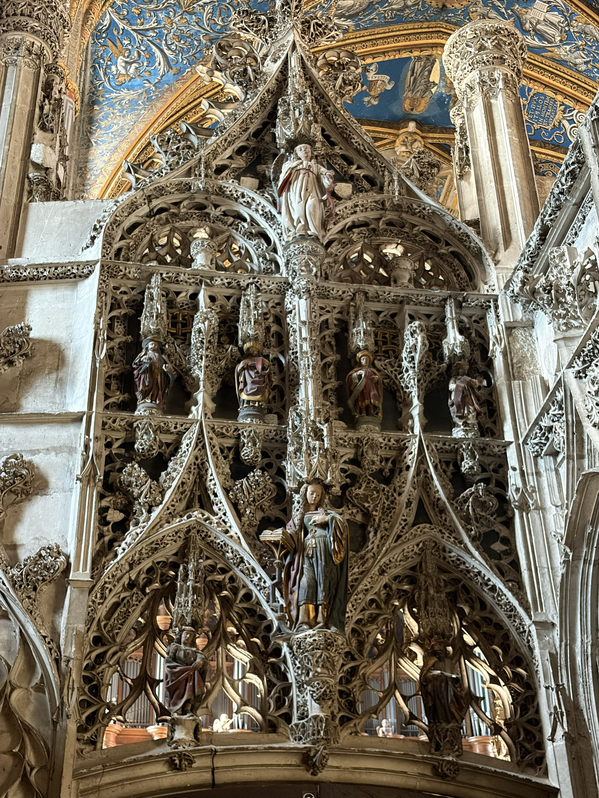
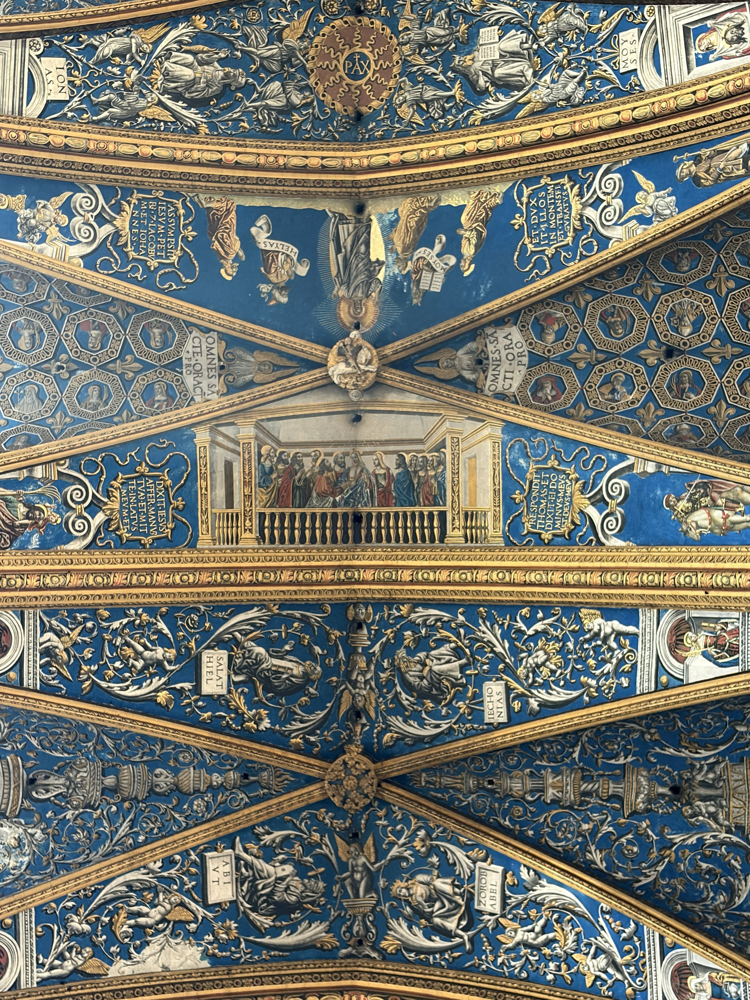
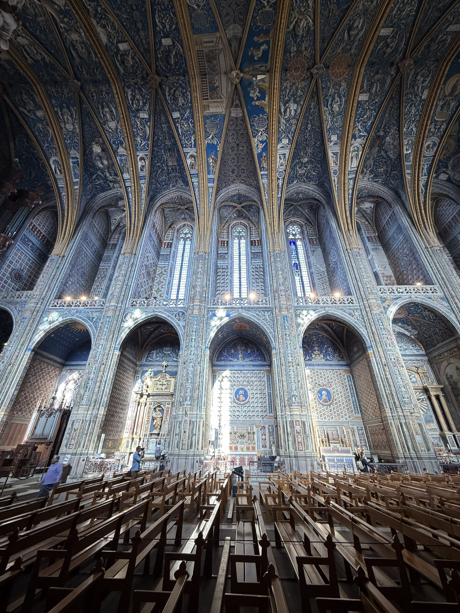

Saint Cecilia Cathedral
The Last Judgement

The saved advance in orderly ranks. Below, the torments of hell form a striking contrast with this peaceful procession.
Photographie personnelle

The damned crowd together, burdened by the books recording their deeds. Beneath their feet, demons and torments give terrifying form to their condemnation.
Photographie personnelle
Compare the two crowds: the order of the saved on the left, the turmoil of the damned on the right. Look for the open books on their chests: each person carries the record of their deeds. Then move down towards the scenes of hell: find the demons, bodies and instruments of torment. How does the composition convey the difference between salvation and condemnation?
This vast painting depicts the judgement of humanity at the end of time. Each person answers for their deeds: some enter paradise, while others are condemned. Below, punishments associated with the deadly sins make the consequences of sin tangible and frightening. The image seeks to leave a powerful impression and encourage the faithful to live in pursuit of salvation.
Yet the centre of this story is missing: the section containing Christ the Judge was lost when an opening was cut through the wall in 1693.
The Rood Screen and Choir Enclosure

Above the doorway, Charlemagne holds a sword and an orb, symbols of imperial power.
Photographie personnelle
The rood screen marks the entrance to the choir: another space unfolds behind its openwork façade.
Photographie personnelle
Blue evokes the Virgin Mary, red Christ’s blood and divine love, and white purity and light. Colour works alongside sculpture to make the sacred visible.
Photographie personnelle
As we draw closer, new shapes emerge within the sculpted tracery.
Photographie personnelleThe rood screen marks the division between the nave, where the congregation gathered, and the choir reserved for the canons. Together with the surrounding enclosure, it forms a “church within a church”. In this Flamboyant Gothic setting, delicate stonework and colour frame biblical figures, giving visible form to the sacred.
The Painted Vaults — 1509–1512

Foliage, figures and painted architecture unfold between the ribs. Against the deep blue, each detail seems to lead to another.
Photographie personnelle
The pillars draw the eye up to the vaults: painting envelops the space and echoes the upward sweep of the architecture.
Photographie personnelleFollow the ribs, then explore the areas they frame: narrative scenes, medallions, scrolling foliage and small figures. Notice how golden tones stand out against the blue and how the decoration continues from one bay to the next.
In the early sixteenth century, Italian painters brought Renaissance decoration into a Gothic building. Around the religious scenes, they created ornaments inspired by antiquity, combining plants, figures and imaginary forms. The vaults thus bring together Christian narratives and a new decorative language.